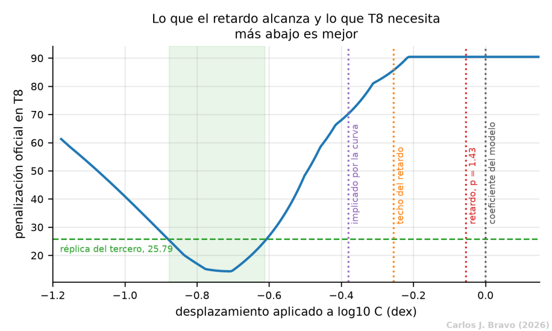
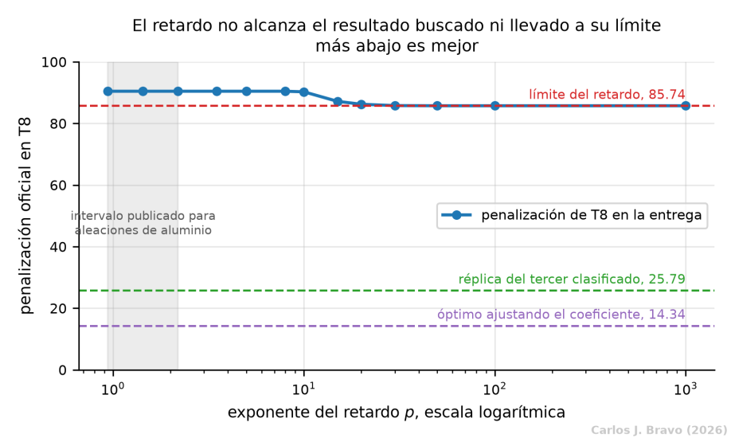

- 1. El problema
- 2. La señal
- 3. La ley física
- 4. El modelo
- 5. Conclusiones
- Bibliografía
Configuración 2: integrar la carga real, ciclo a ciclo
La Configuración 1 extrapola con una fórmula cerrada que supone una carga promedio. Esta configuración se pregunta si sería mejor seguir la carga tal como es, bloque a bloque, y si de paso conviene tener en cuenta que una sobrecarga frena la grieta durante un tiempo.
Una sola pieza nueva, después de la red
La Configuración 2 añade a la base el componente (c), el predictor multi-paso. No toca la red: hereda el codificador, la cabeza de estimación y la cabeza del coeficiente de la Configuración 1, con los mismos pesos y el mismo entrenamiento. Lo único que cambia es el motor que proyecta la grieta cuando se acaba la señal.
Como el motor de extrapolación no tiene nada que aprender, la evolución del entrenamiento es exactamente la de la Configuración 1. Toda la diferencia, si la hay, aparece al proyectar.
Por qué integrar paso a paso podría ayudar
La fórmula cerrada de la Configuración 1 es exacta cuando todos los ciclos son iguales, pero en T8 no lo son: la carga alterna 500 ciclos con un máximo de 90.00 MPa y otros 500 con 100.21 MPa. La fórmula resume ese bloque en un único rango de tensión equivalente y resuelve la ley de una sola vez. El predictor multi-paso la sustituye por un integrador numérico que avanza en pasos de 250 ciclos. En cada paso calcula la velocidad que produciría cada tramo del bloque con la grieta que hay en ese momento, y las promedia ponderando cada tramo por sus ciclos.
La ventaja de ese motor no es tanto el promedio como la posibilidad de tocar cada tramo por separado antes de promediar. Es lo que necesita un efecto de historia, en el que lo que pasó en un ciclo altera la velocidad de los siguientes, y es justo lo que hace la variante 2b: frenar el tramo de 90.00 MPa tras la sobrecarga del de 100.21 MPa. La velocidad de cada tramo es la ley de Paris con su propia tensión:
El método de Runge-Kutta de cuarto orden avanza la solución a pasos de tamaño h. En cada paso evalúa la pendiente cuatro veces (al principio, dos veces en el punto medio y al final) y las combina con pesos 1, 2, 2 y 1. Es el integrador clásico por excelencia: preciso, estable y fácil de controlar.
Una sobrecarga deja huella: el modelo de Wheeler
Cuando una grieta sufre un ciclo más intenso de lo normal, su punta se deforma plásticamente y deja a su alrededor una pequeña zona de material endurecido. Mientras la grieta avanza dentro de esa zona, crece más despacio. Es un efecto conocido como retardo por sobrecarga, y en T8 el tramo de 100.21 MPa hace de sobrecarga frente al de 90.00 MPa.
De todos los modelos que describen este efecto se eligió el de Wheeler (1972) porque es el que menos parámetros libres tiene: uno solo. Ningún espécimen de entrenamiento está sometido a carga variable, así que cualquier modelo con más grados de libertad sería imposible de calibrar con estos datos. El radio de la zona plástica de un ciclo, en tensión plana, es:
con σy = 345 MPa, el límite elástico del 2024-T3 en chapa fina, y α = 2, la constante de tensión plana. El modelo compara la zona que deja la sobrecarga con la que genera el ciclo en curso, y frena la velocidad con un factor φ mientras la punta siga dentro:
Aquí aol es la grieta en el momento de la sobrecarga, rol la zona plástica que generó, y p el único parámetro del modelo. Tampoco p puede calibrarse con estos datos, así que se adoptó p = 1.43, un valor dentro de los intervalos publicados por Sheu et al. (1995) para las aleaciones de aluminio 5083-O y 6061-T651. Para el 2024-T3 no hay ninguno publicado.
Tres filas idénticas, por dos razones distintas
| Variante | T7 | T8 | Total | RMSE T7 (mm) | RMSE T8 (mm) |
|---|---|---|---|---|---|
| Configuración 1, fórmula cerrada | 6.49 | 90.45 | 96.94 | 0.350 | 2.418 |
| Configuración 2, integración paso a paso | 6.49 | 90.45 | 96.94 | 0.350 | 2.418 |
| Configuración 2b, integración con retardo | 6.49 | 90.45 | 96.94 | 0.350 | 2.418 |
Las tres filas coinciden, pero esa coincidencia esconde dos fenómenos diferentes, y solo uno es un resultado nulo de verdad.
La integración no aporta, y no podía aportar
La diferencia máxima entre integrar y usar la fórmula cerrada es nula hasta la cuarta cifra decimal, incluso quitando la cota de extrapolación. La razón es estructural. Con carga constante, la fórmula cerrada es la solución exacta de la ecuación, así que no hay nada que mejorar. Con la carga variable de T8 ocurre algo parecido: con m = 2, la velocidad de Paris es proporcional a la grieta por el cuadrado de la tensión, de modo que promediar la velocidad de los dos tramos equivale exactamente a usar el rango de tensión equivalente de la fórmula cerrada. El integrador resuelve la misma ecuación por otro camino. Incluso integrando cada tramo por separado, la grieta crece unas 0.36 mm por bloque en el anclaje de T8 y la diferencia con la fórmula cerrada se queda en dos a cuatro centésimas de milímetro a mitad de bloque, para desaparecer al cerrarlo. Es un resultado nulo útil: descarta que la fórmula cerrada sea una fuente de error en este problema.
El retardo sí actúa, pero se queda corto
Si se quita la cota de 7.24 mm y se mira la extrapolación tal cual, el retardo reduce la penalización de T8 de 8289.46 a 6793.85, un 18%, y con exponentes más altos llega a 3811.91. Actúa, y en la dirección correcta. Pero la cota corrige el mismo defecto (la extrapolación de T8 que se dispara) mucho más a fondo: por sí sola lleva la penalización de 8289.46 a 90.45. Con la cota puesta, el efecto del retardo queda absorbido entero.
Mirando más de cerca aparece algo más interesante. En el rango de grietas que importa, de 2 a 15 mm, el factor de retardo es prácticamente constante, 0.7354, porque la sobrecarga se repite en cada bloque y la punta nunca llega a salir de su zona plástica. Un factor constante no es un efecto de historia: integrar con él equivale exactamente a multiplicar el coeficiente por 0.88261, es decir, a desplazar log10 C en -0.054 décadas. El retardo, en este bloque de carga, no es más que una recalibración del coeficiente.

Y esa recalibración tiene un techo. En el bloque de T8, el tramo de 100.21 MPa es la sobrecarga, de modo que nunca se retarda y siempre aporta su velocidad completa. Aunque el tramo de 90.00 MPa se frenase del todo, la velocidad media del bloque solo podría bajar hasta la contribución del otro tramo. Eso fija un techo de 0.255 décadas, cuando para bajar de la réplica del tercer puesto harían falta entre 0.612 y 0.877. Ni subiendo el exponente p hasta valores sin ningún respaldo se alcanza: la penalización satura en 85.74.
